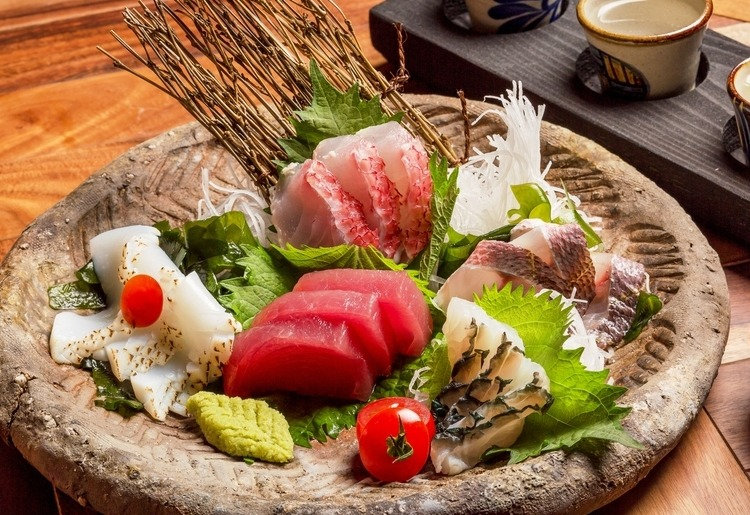
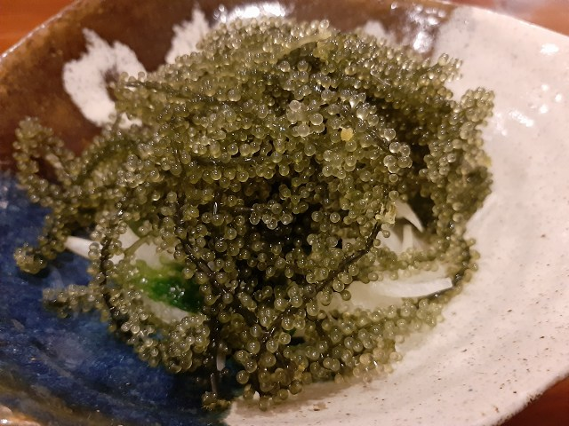
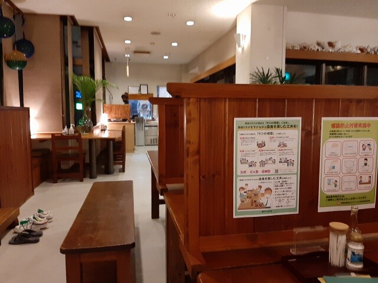

居酒屋うるま
ホームへ戻る
Language/言語:
English
/
日本語
石垣島グルメ
居酒屋うるま
  
石垣離党ターミナル近辺の数ある店の中でも上品な店構え。
新鮮でプリップリな食感の魚介類や島野菜、石垣島産の酒がリーズナブルな価格で楽しめる。
入口がビルの2階で目立たない為、比較的すいている穴場。超おススメです。
住所〒907-0012
沖縄県石垣市美崎町3−番地 東バスターミナルビル 2F
TEL0980-82-0864
詳細情報
ページトップへ戻る